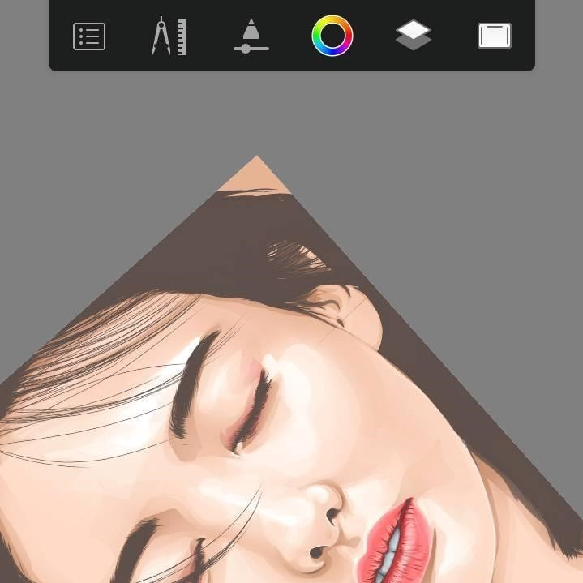
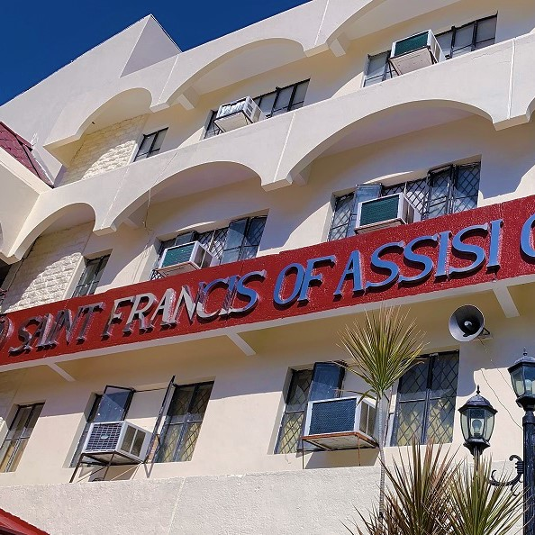
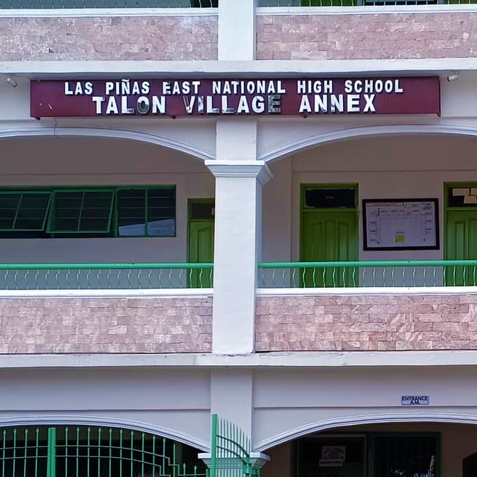
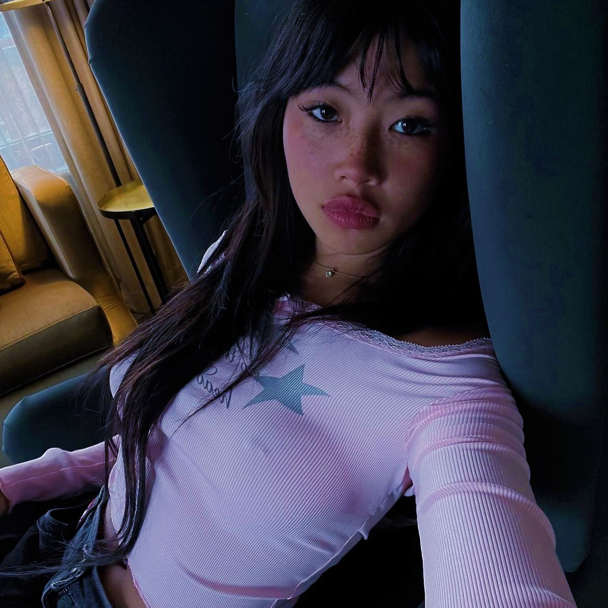

About Me
Hello, my name is Gian Gregorio V. Florido and I am a second-year college student pursuing
a Bachelor of Science in Computer Engineering at Polytechnic University of the Philippines
- Main Campus. I have always been fascinated by the intersection of technology and innovation,
and I believe that my studies in computer engineering will help me make a difference in the world.
My ultimate goal is to work for a tech company that is making a positive impact on the world.
I am excited about the endless possibilities that the tech industry offers and am committed to
using my skills to make a difference.
Skills
Education
Hobbies
- Languages: Python, C# and Unity, HTML, CSS, and JavaScript
• Familiar with basic concepts of each language
• Able to create simple programs and scripts - Digital Art: Drawing on mobile devices using Autodesk
• Experienced in producing artwork as a hobby
• Skilled in a particular style and technique

- Polytechnic University of the Philippines - Main Campus (2021 - Present)
• Computer Engineering
• President's Lister - Saint Francis of Assisi College - Main Campus (2019 - 2021)
• STEM strand
• With Honors

- Las Piñas East National High School - Talon Village Annex (2015 - 2019)
• Grade 10 Math Club Officer (Treasurer)
• With Honors

- I love watching:
• Movies
• Anime
• Series (Korean/Western) - I love listening to:
• beabadoobee
• TWICE
• Stray Kids

My Services
Hey there! Welcome to my services page. As a college student with a passion for game development and digital art, I am excited to offer my skills to help bring your ideas to life. I specialize in Unity scripting with C# and digital art using Autodesk Sketchbook.
Unity Scripting with C#
I can help you create custom scripts for your Unity 3D games using C#. Whether you need gameplay mechanics, user interface elements, or other custom features, I can work with you to bring your ideas to life. As a beginner, I am eager to learn and take on new challenges in the field of game development.
Contact Me!Digital Art using Phone
I offer digital portrait drawing services using Autodesk Sketchbook. I specialize in drawing realistic and stylized portraits of individuals using reference images. Whether you want a portrait for personal or professional use, I can create a high-quality digital art piece that captures the likeness and personality of the subject. I am experienced in various techniques and styles and can work with you to create a unique and customized portrait.
Contact Me!My Works
Digital arts:
In my free time, I enjoy creating digital artworks using the reference of my favorite artists. I find joy in making these artworks while enhancing my skills. Although I am not a very good artist, I have already produced a variety of artworks that I am proud of. It's a personal hobby that allows me to express myself creatively and relax. I hope you enjoy viewing my art as much as I enjoyed making them.